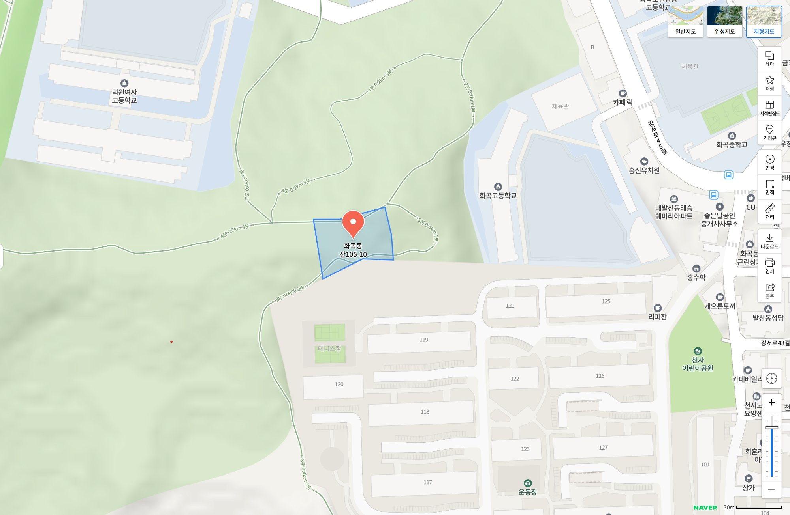
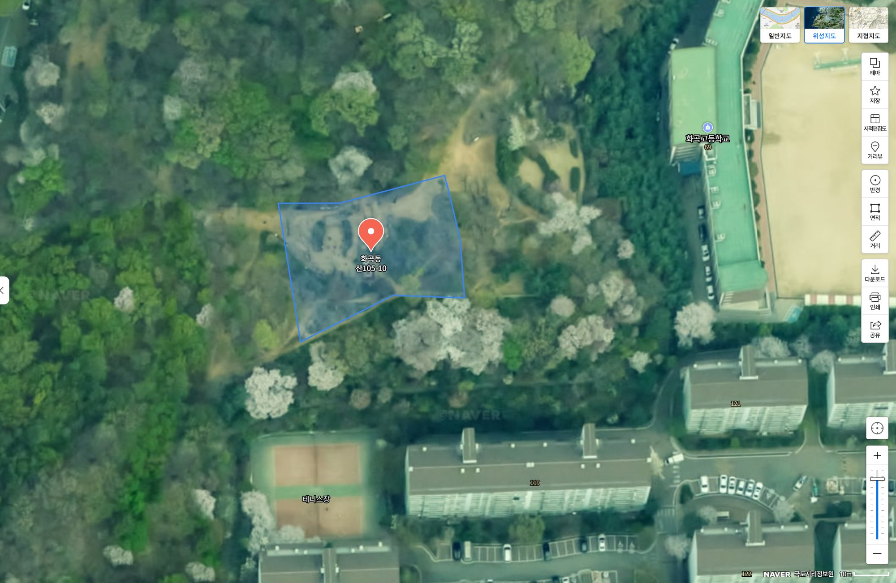
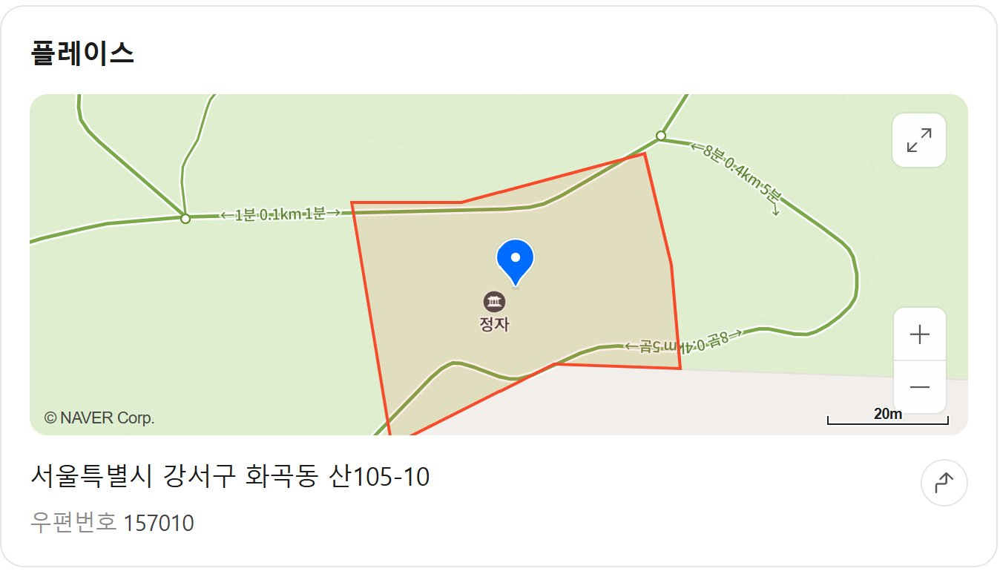

이 땅은 어떤 땅입니까
여러분이 매일 아침 체조를 하시고, 산책을 즐기시는 수명산 생활체조광장. 이곳은 서울시 강서구 화곡동 산105-10번지, 면적 1,636㎡(약 495평)의 사유지입니다.
이 땅은 1990년 아버지가 매입하였고, 어머니를 거쳐 2021년 제가 상속받았습니다. 공시지가는 약 9억 1,240만 원입니다.
그리고 이 땅에는 8개의 규제가 중첩되어 있어, 건축도 개발도 농사도 할 수 없는 맹지입니다.
25년간 무단 사용된 경위
1990년대 말부터 강서구청은 이 사유지 위에 정자, 야외 운동기구, 가로등, 조경시설, 산책로를 설치하고 "수명산 생활체조광장"이라는 이름으로 운영해 왔습니다.
토지 소유자에게 단 한 번도 사용 허가를 받거나 사용료를 지급한 적이 없습니다.
"체력단련 및 여가선용으로 잘 사용하고 있으니 토지주가 넓은 마음으로 이해해 주시기 바랍니다."
"공원으로 지정될 수 있도록 최선을 다할 계획입니다. 향후 더는 구조물 설치 없을 것이며, 재설치 시 사용승낙을 받겠습니다."
2021년 – 매입이 결정되었습니다
2021년 5월, 어머니가 돌아가셨습니다. 저는 이 땅을 상속받으며 약 1억 2천만 원의 상속세·취득세를 대출받아 납부했습니다.
국민권익위원회는 조사 후 이 땅을 강서구청이 매입하는 것이 타당하다고 권고했습니다.
"매입 절차를 진행하고자 하며, 10월 중 계약서를 작성하고, 2022년 1월까지 잔금 지급 및 등기 이전을 완료할 계획입니다."
공유재산심의회 승인까지 완료되었습니다.
그런데 매입이 중단되었습니다
저는 세금 1억 2천만 원을 낼 돈이 없는 절박한 상황에서, 공원녹지과장이 "1억 5천이면 흔쾌히 해결해줄 수 있다"고 하여 "그 정도면 어떻겠느냐"고 의사를 타진했습니다. 공시지가 약 9억 원짜리 땅을 6분의 1 가격에 넘기라는 제안이었습니다.
그런데 녹지과에서는 재확인도 하지 않고 바로 공유재산심의회에 올려버렸습니다. 제가 "다시 상의하자"고 했더니, "이미 구두계약이 성립됐다, 법대로 하라"고 답했습니다. 계약서가 작성된 적도, 계약금이 오간 적도 없었습니다.
2025년 4월에는 공원녹지과 팀장이 다시 "3억 5천만 원이면 매입해줄 수 있다"고 타진해 왔습니다. 공시지가 9억인 땅을 1억 5천, 3억 5천에 사겠다고 하신 것은 — 처음부터 공시지가대로 매입할 생각이 없었다는 증거입니다.
3년간의 소송
저는 안내받은 대로 법적 절차를 밟았습니다. 3년간 소송을 진행했고, 소송비용으로만 약 2,500만 원을 지출했습니다.
소송에서 강서구청의 주장
"시설물은 자연발생적으로 설치된 것이며, 인근 주민들이 설치한 것이다."
그러나 강서구청 이름이 적힌 안내판이 설치되어 있었고, 구청장 공식 답변에서는 "설치된 시설물"이라고 직접 인정한 바 있습니다. 위성사진에서도 사람들이 밟아 만든 길과 체조광장이 선명하게 보입니다. (→ 지도 섹션에서 확인)
법원 판결
"지장물을 철거하고, 토지를 인도하라."
강서구청은 항소했으나 서울남부지방법원에서 항소 기각, 이후 대법원에서 상고 기각(2024다323948, 2025.3.13)되어 1심 판결이 확정되었습니다.
확정된 판결 내용: 지장물 철거, 토지 인도, 부당이득 반환금 약 4,625만 원(2017~2025년 무단 사용에 대한 보상). 25년간 무단 사용 중 7년분만 인정된 금액입니다.
핵심 모순 – 공시지가 이중 잣대
이 사건의 본질은 한 문장으로 요약됩니다.
"세금을 거둘 때는 공시지가가 법이고,
매입할 때는 공시지가가 법이 아닙니까?"
강서구청은 공시지가 약 9억 원을 기준으로 상속세·취득세 1억 2천만 원을 부과했습니다. 소유자가 공시지가를 낮춰달라고 요청하자 "절대 낮출 수 없다"고 거부했습니다.
그런데 같은 공시지가 기준으로 매입을 요청하자 "공시지가로는 매입할 수 없다"고 합니다.
더 나아가 구청은 이미 알고 있었습니다. 2021년에 1억 5천만 원을, 2025년에 3억 5천만 원을 제시한 것은 공시지가가 이 땅의 실제 가치와 맞지 않는다는 것을 구청 스스로 인정한 것입니다. 알면서도 공시지가를 조정하지 않았고, 그 기준으로 세금만 부과했습니다.
확인된 사실과 근거
| 공시지가 약 9억 원 기준으로 상속세·취득세 1억 2천만 원 부과 | 세금 고지서 |
|---|---|
| 같은 공시지가 기준으로 매입은 불가하다고 함 | 구청장 답변, 감사과 답변 |
| 2021년 1억 5천, 2025년 3억 5천 염가 매입 시도 | 공원녹지과 통화 녹취 |
| 소유자의 공시지가 하향 요청을 거부 | 감사담당관 답변(2021.8) |
| 소송에서는 "자연발생적 시설"이라 주장함 | 소송 답변서 |
| 구청장 답변에서는 "설치된 시설물"이라 인정함 | 구청장에게 바란다 답변 |
| 2021년 매입 결정 및 공유재산심의회 승인 완료 | 구청장 답변, 의결서 |
| 2026년 같은 땅의 매입이 불가능하다고 함 | 공원녹지과 답변 |
| 철거 결정 전 체조 강사에게 미리 대체 장소를 마련해 줌 | 현장 확인 |
| 8번의 민원에 구체적 답변이 단 하나도 없음 | 구청장에게 바란다 답변 전문 |
| 35년간 재산세 부과 없음 → 철거 후 재산세 신규 부과 예정 | 지방세법 |
정리하면 이렇습니다: 규제는 구청이 만들고, 세금은 구청이 걷고, 사용은 구청이 하고, 보상은 구청이 안 합니다. 그리고 철거해서 돌려주면, 그때부터 재산세까지 부과합니다.
지도로 보는 현실 – 펜스를 치면 수명산이 막힙니다
강서구청은 "사적으로 쓰라"고 했습니다. 그런데 이 땅에서 소유자가 할 수 있는 가장 기본적인 일은 펜스를 치고 관리하는 것입니다. 아래 지도를 보시면, 그것이 어떤 결과를 가져오는지 한눈에 드러납니다.



구청이 규제를 걸어 땅값을 주변의 10분의 1로 만들었습니다. 그 싼 가격(공시지가 9억)조차 매입을 거부합니다. 그러면서 세금은 그 9억 기준으로 부과합니다. 그리고 "사적으로 쓰라"고 했습니다.
사적으로 쓰는 첫 번째 방법이 펜스입니다. 펜스를 치면 수명산이 막힙니다. 이것이 구청이 원하는 결과입니까?
소유자의 현재 상황
35년간 이 땅에 재산세가 부과된 적이 없습니다. 정부조차 이 땅에 생산적 용도가 없다는 것을 인정한 것입니다. 그런데 철거해서 돌려주면, 그때부터 연 240만 원 이상의 재산세가 새로 부과됩니다. 철거가 소유자의 부담을 해결하는 것이 아니라, 오히려 새로운 부담을 만드는 것입니다.
이 땅은 8중 규제가 걸린 맹지로, 매매도 불가능하고 담보로도 사용할 수 없습니다. 건축, 개발, 농사 모두 불가합니다.
강서구의 연간 예산은 2조 원이 넘습니다. 이 땅의 공시지가는 약 9억 1천만 원입니다.